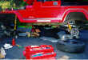

I love it! It's a big-ass Jeep, and it performs like I've always wanted it to. I also learned a hell of a lot in the process. I can safely say that EB axles make for a good swap candidate for YJ or TJ, but I'll add one caveat: if you're going to do it, do a springover (YJ) or lift springs at the same time like I did.
Don't like the springover thing? Then make some measurements and be REAL sure that there aren't any problems with the front diff and driveshaft touching anything. Otherwise, this really is a good swap. You can run the axles uncut, and with standard-offset wheels the width is perfect. Plus you can keep your NP231 or NP207 transfer case, since the front diff's on the same side as the D30. That's the major problem with the Scout axle swap.s
Another advantage of the early Bronco axles over the Scout axles is there's no fancy welding, knuckle-turning, diff-housing grinding, or any other funky stuff required to make it work. On the other hand, the small u-joints in the front are a potential weakness, but the driver side shaft is easily upgraded, and the passenger side shaft can be upgraded with a little work.
Two cans of Hammerite from the local General Paint went onto everything I could find. Hammerite is a brush-on primerless metal paint, and it was the perfect stuff for a job like this. In the Pacific North West, you need to protect your goods.
One issue with an axle swap of this sort is wheel bolt pattern. The Wrangler axles use a 5 on 4.5" wheel bolt pattern, but the Bronco axles use a 5 on 5.5" wheel bolt pattern. I ended up purchasing a set of 35" General Grabber MTs on cheap white spoke wheels (let's not get TOO carried away).
The 4.10 gears with 35" tires and a carbuereted 258 engine leaves something to be desired in the power department. It is better than the 3.07's with 31" tires, though. It crawls pretty well, but it ain't great on the highway - I still almost never see fifth gear. A set of 4.56s would probably be ideal, but were never a stock option for EBs. Obviously, the only solution is an MPI conversion next year sometime ;-).
The stock YJ master cylinder appears to be up to the task of stopping the Chevy discs and Bronco drums, but it could use a little more oomph. I may look at swapping in an F150 M/C later on, but I'm living with it for now.
The only thing I might have done differently would be to use axles from a '76 or '77 Bronco, since then you'd get the front disc brakes.
| Pearl of wisdom: Axle swaps are expensive. . |
I'd like to thank Larry Soo (aka lars, the Jeep God), Rob Bryce, Ed Mah, Grant Klavatalks, Rick Boiros, John Nutter, Mike Garner, Chris Kutish, and Terry Howe for their help, patience, and advice during this whole thing.
